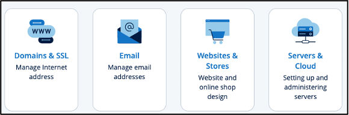
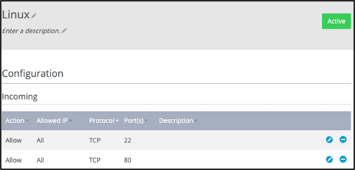
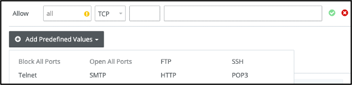

1.3. Configuring VM Firewall Policy
1.3.1. Assignment Instruction
Assignment Instruction
This instruction shows you how to access the network firewall policy of your Linux server in the virtual machine (VM) so we can modify the firewall policy as needed.
Objective: 1. Enable network ports (22 and 80) on the VM for connection and serving Web content.
1.3.2. Getting Started
Getting Started
Follow these steps to configure the VM firewall policy:
Log in and Select Servers:
Step 1/5
Log into https://ionos.com/ and you will be redirected to the product page (https://my.ionos.com/product-overview). Choose the Servers and Cloud tile.
{kind=link}
Select the Contract:
{kind=link}
Configure Network Ports:
Step 3/5
Click on the Network button on the blue left menu of the Servers page and then.
Click on the Firewall Policies option from the dropdown menu. The Firewall Policies page will show up.
Click on the server Name to show the firewall policies table.
{kind=link}
Open the SSH Port (Port 22):
Step 4/5
Port TCP 22 (used by the Secure Shell, or SSH, protocol) should show as below on the Configuration => Incoming list with values of Allow All.
{kind=link}
If port 22 is not shown on the Allow list of the firewall policies, go to the end of the list and
Click on the Add Predefined Values button below the firewall policies to bring up the protocol popup menu.
Click on SSH in the popup to add port 22 to the firewall rules table.
Click on the Add Rule button to add the firewall rule to allow network connection through port 22.
Note that it may take several seconds for the new firewall policy to take effect.
{kind=link}
Open the HTTP Port (Port 80):
Step 5/5
Repeat Step 4 to open port 80 (used by HTTP) or other ports desired.